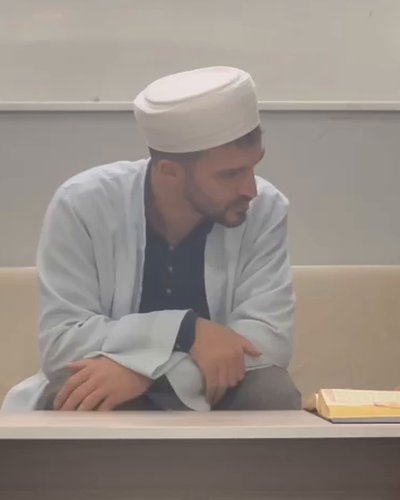

Gündüzlü eğitim
09.00 – 20.00Talebelerimiz sabah medreseye gelir, akşam evine döner.
Medreselerimizde her gün Kur'an-ı Kerim'in bereketiyle başlar; ilim, edep ve güzel ahlakla devam eder. Kapımız, evladının Kur'an'la yetişmesini isteyen her aileye açık.
Bilgi ve kayıt: 0551 164 74 64
Cumhurbaşkanı Kararı ile kamu yararına çalışan dernek
İster gündüzlü ister yatılı, talebelerimiz hafızlık yolunda hocalarımızla birlikte ilerler.
Talebelerimiz sabah medreseye gelir, akşam evine döner.
Talebelerimiz hafta boyunca medresede kalır, hocalarının yanında yetişir.
Medrese dışında, cemaatimizle sohbet ve zikir halkalarında buluşuyoruz. Gün ve saat için bizi arayın.
Hafta sonu ders yapmıyoruz. Eğitim haftamız Cumartesi öğlen biter.
Talebelerimiz hafızlık yolunda ilerlerken bu dersleri de görür.
"Hafızlık sadece ezber değildir. Sabrı öğrenmek, disiplini kazanmak, kardeşliği yaşamak ve Allah'ın kelamıyla büyümektir."
Üç kolay adımda evladınız aramıza katılır.
0551 164 74 64 numaralı telefondan bize ulaşın, sorularınızı cevaplayalım.
Size en yakın medresemize gelin, hocalarımızla tanışın.
Gündüzlü ya da yatılı eğitimden size uygun olanı birlikte belirleyelim.
Atalar, Cevizli ve Kurfalı medreselerimizde hizmet veriyoruz. Topselvi Medresemizi de çok yakında açıyoruz inşallah.
Kayıtlar için bizi arayın
Kayıtlar için bizi arayın
Kayıtlar için bizi arayın
Çok yakında açılıyor
Eğitim yılını talebelerimiz, aileleri ve hocalarımızla birlikte yıl sonu merasimiyle tamamlıyoruz.
Medreselerimizdeki eğitim programı Salih Gedik Hocamızın riyasetinde yürütülüyor. Evlatlarımız onun rehberliğinde hem hafızlık yolunda ilerliyor hem de millî ve manevî değerlerle yetişiyor.

Ailelerimizin en çok sorduğu sorular. Aklınıza takılan başka bir şey olursa bizi arayın.
Gündüzlü talebelerimiz 09.00 – 20.00 arasında medresede olur, akşam evine döner. Yatılı talebelerimiz Pazar akşamı 21.00'de gelir, hafta boyunca medresede kalır ve Cumartesi sabahı 10.00'da ailesinin yanına döner.
Hayır. Eğitim haftamız Cumartesi öğlen biter, hafta sonu ders yapmıyoruz.
Kur'an-ı Kerim ve hafızlığın yanında tecvid, talim, makam, ilmihal, peygamberler tarihi, ibadet ve adab dersleri veriyoruz.
Atalar, Cevizli ve Kurfalı medreselerimizde hizmet veriyoruz. Topselvi Medresemiz çok yakında açılıyor. Adres ve yol tarifi için bizi arayabilirsiniz.
Medreselerimizin dışında cemaatimizle sohbet ve zikir halkalarında buluşuyoruz. Gün ve saatleri öğrenmek için bizi arayabilirsiniz.
Evet. Derneğimiz Cumhurbaşkanı Kararı ile kamu yararına çalışan dernek statüsündedir. Makbuz karşılığı yaptığınız bağışlar, kanunda belirtilen sınırlar içinde vergi matrahınızdan indirilebilir. Ayrıntılar Bağış sayfamızda.
0551 164 74 64 numaralı telefondan bizi aramanız yeterli. Sorularınızı cevaplayalım, sizi medresemizde ağırlayalım.
Menekşe İlim Kültür Okuma Derneği, Cumhurbaşkanı Kararı ile kamu yararına çalışan bir dernektir. Mahallelerimizin çocuklarına ve ailelerine hizmet ediyor, hayırseverlerimizin desteğiyle büyüyoruz.